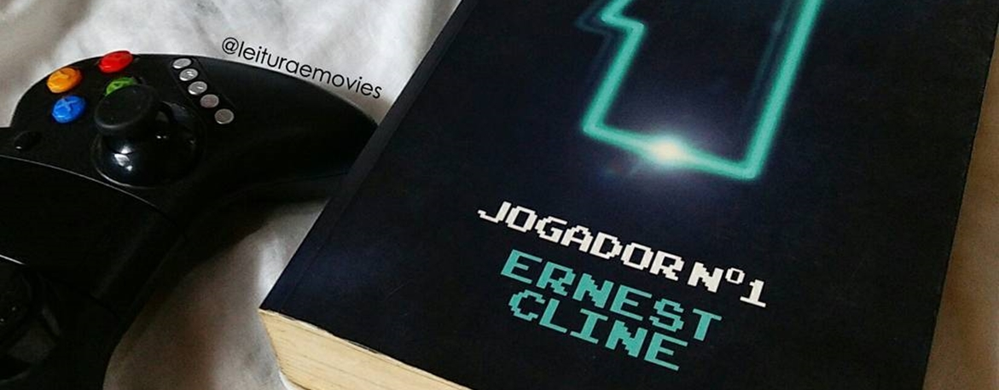

JOGADOR N° 1 - RESENHA
COMO DESCOBRI
Eu descobri Jogador Número 1 em 2012, quando eu e um amigo estávamos passeando entre as duas livrarias daqui de Fortaleza, primeiro fomos na livraria Cultura e logo depois na Saraiva do Shopping Iguatemi, enquanto passávamos pelas prateleiras encontramos um livro escondido com sua capa verde, a gente achou muito bonito e gostamos da sinopse, porém ninguém levou o livro, estava bem caro na época e tinha outras obras que mais interessavam e que se mostraram uma decepção depois (cof cof, Assassins Creed).
Naquele mesmo ano, em dezembro de 2012, foi a bienal do livro, meu amigo encontrou o livro à venda e ele comprou e trouxe para casa, como ele estava lendo outro livro, ele me emprestou para ler primeiro, e que maravilha de surpresa! Que maravilha foi Jogador N° 1 na minha vida!
Eu fiquei encantado logo de cara, pois ele vai falar sobre a cultura pop dos anos 80 que é uma paixão minha, filmes, músicas, programas de TV, tudo daquela década acaba me atraindo de uma forma que nem eu mesmo sei explicar, até porque eu nem era nascido. Jogador Número 1 tem tudo isso e ainda uma coisa que gosto bastante que são os livros, ele me emprestou, eu li e depois me emprestou novamente só que dessa vez nunca mais devolvi e está comigo desde então.
A Editora Leya, que publica o livro Brasil, em 2015, acabou divulgando que estaria publicando novas edições, provavelmente devido ao filme que já estava sendo divulgado e que o Steven Spielberg estaria envolvido.
O autor do livro lançou um livro chamado Armada, que é bem similar, apesar de não ter todo o brilhantismo de Jogador N° 1, junto com Armada lançaram uma segunda edição do Jogador Número 1 que tem uma capa muito bonita, mas eu ainda prefiro a primeira edição. No fim eu acabei tendo as duas edições e até hoje ainda não paguei um livro para o Samuel (nota do editor: 😞).
O ENREDO
O livro vai falar sobre um jogo de realidade virtual onde as pessoas fazem praticamente tudo, elas saem do mundo real para viver nessa realidade, é uma literatura distópica já que a história se passa no ano de 2045, os recursos acabaram e é mais complicado de se viver, então as pessoas estão preferindo viver nesse jogo de realidade virtual chamado Oasis.
Nesse mundo existem escolas, pessoas estudam nesses locais, trabalham, fazem tudo dentro do jogo. O Oasis foi criado justamente para ser uma alternativa para que todas as pessoas de todas as classes conseguissem ter uma vida que normalmente não teriam como. Acontece que o criador do jogo acaba falecendo e ele deixou um testamento dizendo que espalhou 3 chaves escondidas nos milhares de planetas que existem no Oasis.
O mundo do Oasis tem centenas de planetas, galáxias, e em alguns locais desses “universos” estão cheios de referências a filmes, jogos e etc. Em alguns até cidades inteiras de determinada obra cinematográfica, referência a tudo da cultura pop que você possa imaginar. É dentro de alguns desses planetas que estão essas chaves. Aquele que encontrasse as três chaves seria o dono tanto do jogo como de toda a fortuna dele, já que ele é um cara que não tinha família, assim ele estava deixando a herança para quem encontrar esses objetos.
Aí começa um frenesi, todo mundo querendo encontrar essas chaves, acontece que se passaram vários anos desde a morte do criador e ninguém encontrou nada, começam a achar que é uma lenda e que o criador estava pregando uma peça neles, porém o protagonista, o Wade, acaba encontrando a primeira chave e acaba mudando toda a história.
O livro vai mostrar toda a aventura dele tentando descobrir o local dessas chaves que estão escondidas nos planetas mais diversos, nesses planetas ele irá lutar contra monstros e robôs gigantes de diversos filmes e até viver cenas inteiras de obras consagradas como O iluminado e De Volta para o Futuro, com direito a passeio Delorean e tudo.
Com o lançamento do filme, se mostrou que a escolha do Spielberg foi a mais acertada, ele cheio de obras do anos 80 se encaixou perfeitamente no que a história precisava, conseguiu manter a essência do livro, apesar do filme ter seguido uma linha um pouco diferente, o que não desagradou e se mostrou uma ótima surpresa. Eu tive a imensa sorte de assistir quatro dias antes da estreia mundial e fiquei maravilhado com tudo, saí do cinema satisfeito.
Recomendo então você ler o livro e assistir ao filme, irá ser uma experiência completa e inesquecível
Texto produzido por: Marcio Winchester e Samuel Johnson